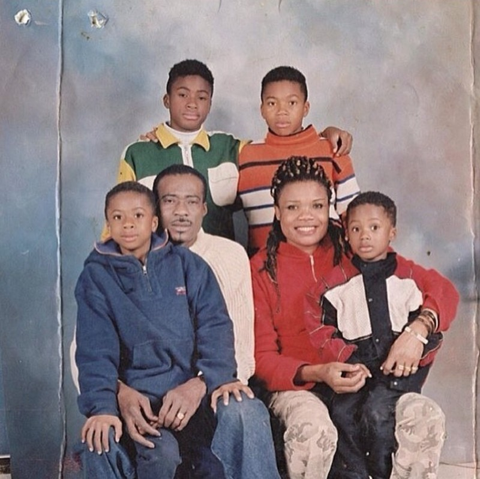

Designed by: Riche Cai
| Charles Antetokounmpo | Veronica Antetokounmpo | Thanasis Antetokounmpo | Kostas Antetokounmpo | Alexis Antetokounmpo |
|---|---|---|---|---|
Charles Antetokounmpo was a former Nigerian soccer player who is best known for being the father of the Milwaukee Bucks Basketball Team's Star player, Giannis Antetokounmpo. He was born on August 3, 1964. In 1991 he and his wife Veronica moved from Lagos, Nigeria to Athens, Greece as part of a wave of immigrants seeking better lives. Four more sons were born to him and his wife while in Athens, Greece. He moved to Milwaukee in 2013 with his wife and two youngest sons, Alex who was still in High School and Kostas, a freshman at the University of Dayton, in Dayton, Ohio. Sadly, he passed away at his home in Milwaukee, Wisconsin, on September 29, 2017, at the age of 53.
Three years after his Veronica and Charles emigrated from Lagos, Nigeria, leaving behind their first son, Francis, Giannis Antetokounmpo was birthed in Greece. Veronica and Charles immigrated to Greece for better employment opportunities, but upon arriving at Greece they were faced with the same issue of unemployment. Unlike her husband, Veronica has less information on her.
Thanasis began playing youth club basketball with the junior teams of Filathlitikos, in 2008. He then played with the senior men's team of Filathlitikos, in the semi-professional levels of the Greek fourth division (2010–11 season), and the Greek third division (2011–12 season). He was born on July 18, 1992 and is the oldest brother out of the four. He now plays on the Milwaukee Bucks alongside his younger brother, better known as "The Greek Freak".
Antetokounmpo was born in Athens, Greece on November 20, 1997. As a youth, he began playing the sport of basketball with the junior youth teams of Filathlitikos, in Athens, just like his two older brothers. After his older brother Giannis was drafted by the Milwaukee Bucks in the 2013 NBA draft, Kostas, along with his parents and his younger brother, Alexis, moved to Milwaukee. He attended Dominican High School in Whitefish Bay, Wisconsin, where he played high school basketball during his junior and senior years. As a senior, he led his team to a state championship. He now plays for the LA Lakers and comes off the bench as a power-forward.
The basketball star was born Alexis Antetokounmpo on August 26, 2001, in Greece by his parents, Charles and Veronica. Alexis got his earliest education from schools in Greece. However, he didn’t have the easiest life growing up because his parents had no steady jobs and so they struggled to keep food on the table for their kids and there were times when the fridge went empty. Alexis now plays basketball and attends Dominican High School in suburban Milwaukee where he lives.
The Antetokounmpo family in the early 2000's
Giannis Antetokounmpo "The Greek Freak": index.html
Reference Website that includes citations that assist in the makikng of the website : references.html
Giannis's Signature Shoes: GiannisShoes.html
HTML validator used to validate the website: https://validator.w3.org/
CSS validator used to validate the website: https://jigsaw.w3.org/css-validator/
Back to TOP